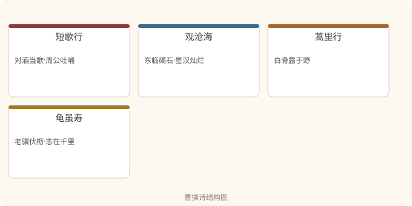

曹操诗选
一、基本信息
| 作者 | 曹操 |
|---|---|
| 成书/出版 | 诗作于约196—220年间 Cao Cao — Encyclopaedia Britannica（百科全书） |
| 国别/地区 | 中国 |
| 时代 | 古代 · 东汉 |
| 体裁 | 诗选集 |
| 语言 | 汉语（乐府） |

曹操诗结构图（主题·结构图）
二、创作背景
曹操为建安文学领袖——『三曹』之一（通说）。Britannica 记其政治军事身份——skilled general and pragmatic politician（善战的将领与务实的政治家——Britannica）。
三、内容脉络
《短歌行》：『对酒当歌，人生几何……周公吐哺，天下归心』（原文，公有领域）。
《观沧海》：『东临碣石，以观沧海』（原文，公有领域）。
《蒿里行》：『白骨露于野，千里无鸡鸣』（原文，公有领域）。
四、主要人物表
| 人物 | 身份 | 说明 |
|---|---|---|
| 曹操 | 政治家·诗人 | 建安风骨代表 |
五、主题与艺术特点
- 慷慨悲凉：统一天下的雄心与人生短暂的感伤（通说）。
- 乐府旧题写时事（通说）。
六、影响与评论
- Britannica（Cao Cao 条）：现代史家视其为善战的将领与务实的政治家（Modern historians see him as a skilled general）。
Cao Cao — Encyclopaedia Britannica（百科全书） - 建安风骨为后世诗歌标准（通说待核）。
Cao Cao — Encyclopaedia Britannica（百科全书）
七、阅读建议
难点
- 乐府旧题与史实关系。
- 三曹与建安七子。
- 《曹操集》（中华书局，通说待核）。
- 余冠英《汉魏六朝诗选》（通说待核）。
先读《短歌行》《观沧海》→《蒿里行》《龟虽寿》→ 通读选本。
八、待核实
- 曹操诗存世数待核。
- 三曹与建安七子名单待核。
- 《短歌行》原文逐字核对。
本页主要来源
曹操的其他收录作品：曹操诗选